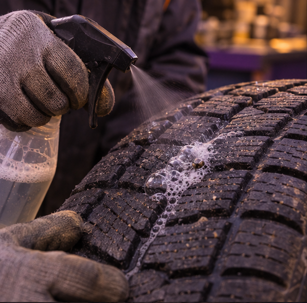

Перед поездкой
Сориентируйтесь по ситуации
Давление уходит прямо сейчас
Позвоните, расскажите про повреждение и уточните возможность приёма. При необходимости организуйте безопасную доставку автомобиля или снятого колеса.
Шина спускает постепенно
Скажите, как часто приходится подкачивать. Подготовьте размер шины и фото места повреждения, если оно видно.
Нужна плановая работа
Уточните шиномонтаж, балансировку или хранение шин. Назовите количество колёс и их размер.